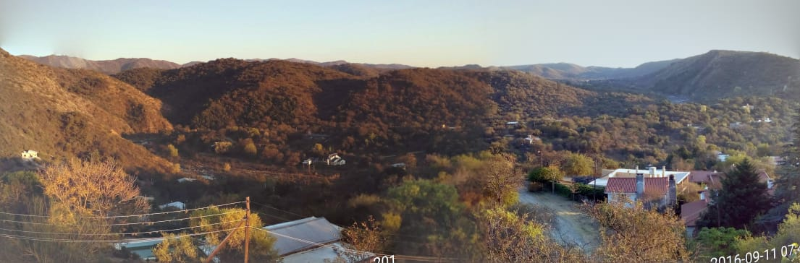

Tu escapada arranca acá: río, naturaleza y planes inolvidables
En Hostería La Porteña no solo venís a dormir: venís a bajar un cambio, conectar con la sierra y aprovechar cada hora de tu estadía.
Armamos esta guía para que elijas rápido qué hacer cerca, según el tiempo que tengas y el tipo de viaje que quieras.
¿Querés que te ayudemos a organizar tu salida? Te orientamos por WhatsApp y te recomendamos el mejor plan según clima, horarios y grupo.
¿Qué hacer según tu plan?
2 a 4 horas
- Parque La Serranita (juegos y actividades al aire libre).
- Tanque 1 y caminata con vista panorámica.
Medio día
- La Rancherita: mirador, reserva y arroyo.
- Dique Los Molinos + paseo por alrededores.
Día completo
- Circuito Dique Los Molinos + La Rancherita.
- Salida a Villa Carlos Paz (teatros, bares y vida nocturna).
Escapada romántica
- Fotos en Dique Los Molinos y "Cola de Novia".
- Caminata al atardecer y noche tranquila en la hostería.
Con chicos
- Parque La Serranita: laberinto, tobogán gigante y juegos.
- Espacios al aire libre para moverse y disfrutar en familia.
🌊 Agua y río

Dique Los Molinos y Cola de Novia
Una salida ideal para contemplar agua, paisaje serrano y sacar fotos memorables.

La Rancherita: arroyo, reserva y mirador
Pueblo vecino con entorno natural, reserva de fauna y flora autóctona y un arroyo que forma una pileta natural amplia.
🚶 Naturaleza y trekking suave

Tanque 1: caminata corta con gran vista
Plan simple y rendidor para activar el cuerpo, respirar aire serrano y sumar una buena panorámica del pueblo.
🚣 Aventura y actividades guiadas
Parque La Serranita (entrada del pueblo)
Espacio pensado para pasarla bien en familia con actividades dinámicas al aire libre.
- Laberinto.
- Tobogán gigante.
- Búsqueda del tesoro.
- Chorritos de agua, carrera de bolitas y travesía.
Ver sitio oficial del parque · Consultanos y te ayudamos a planificar
🏛 Cultura, ciudad y salidas

Villa Carlos Paz
Si te gusta combinar sierras con movimiento urbano, es una opción ideal para sumar teatros, bares y vida nocturna.
Ver sitio oficial de turismo · Consultanos para combinarlo con tu estadía
ℹ️ Recomendaciones prácticas antes de salir
- Pedinos ayuda por WhatsApp para elegir el mejor plan según el clima y el tiempo disponible.
- Si viajás con chicos, priorizá parque + salidas cortas para que disfruten sin cansarse.
- Para fotos y paisajes, Dique Los Molinos y La Rancherita son de los planes más rendidores.
Cómo llegar a la hostería (video guía)
Video explicativo para ingresar a la hostería desde la primera entrada al pueblo de La Serranita.
¿Listo para tu próxima escapada serrana? Reservá tu estadía o escribinos al 0351 156744400.